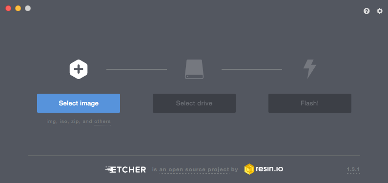

Instalar OctoPrint en una Raspberry Pi desde MacOs
Instalar el servidor de impresión 3D OctoPrint en una Raspberry Pi desde el entorno MacOs es muy fácil.

Primero de todo, descargaremos la última versión de Octoprint desde la web oficial. El fichero descargado viene comprimido en un zip. No es necesario descomprimirlo.
Para quemar la imagen usaremos el programa Etcher.

Solo tenemos que seleccionar el archivo zip descargado, escoger la tarjeta SD que vamos a usar y a grabar. Una vez terminado debamos acceder a la tarjeta SD desde el terminal y editar con nano el archivo octopi-network.txt , donde configuraremos el bloque de configuración de seguridad inalámbrica con los datos de nuestra conexión.
## WPA/WPA2 secured
#iface wlan0-octopi inet manual
# wpa-ssid “put SSID here”
# wpa-psk “put password here”
Para ello descomentamos las siguientes líneas y editamos con los datos de nuestra conexión Wifi
## WPA/WPA2 secured
iface wlan0-octopi inet manual
wpa-ssid “put SSID here”
wpa-psk “put password here”
Grabamos y salimos. Ahora ya podemos colocar la tarjeta sd en nuestra Raspberry Pi y empezar a usar el servidor de impresión, accediendo a la dirección http://octopi.local.